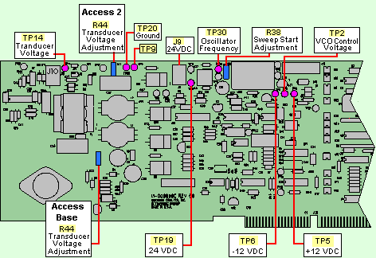
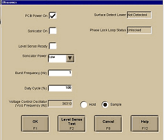

This procedure provides instructions for performing the Pipettor Transducer Voltage adjustment for sonication at all power levels.
Special tools:
- Calibrated multimeter.
- Small screw driver for potentiometer adjustment.
- Temperature meter (Fluke 52) or thermocouple module (Fluke 80TK ).
Refer to this diagram to locate the test points and adjustment pots required for setting or verifying the ultrasonic voltages.

-
Draining The Transducer
-
Check and adjust the Transducer temperature to 37°C + 2°C. Refer to the
Transducer Temperature Adjustment
procedure for details.
-
Drain the Buffer Supply Tubing.
- Lower the Pipettor probe fully into the Wash tower.
- Enable the Vacuum Pump in Diagnostics >> Digital Devices so that fluid does not overflow the wash tower.
- Loosen (but do not disconnect) the service loop fitting at the fluidics manifold.
- Drain for 30 seconds or until fluid is removed from the transducer.
- Tighten the service loop fitting when draining the fluid is complete.
- Disable the Vacuum Pump and move the Pipettor to the Home position.
-
Adjusting The Level Sense Voltage
-
Connect the DVOM to TP2 (VCO control voltage) and TP20 (Ground).
Note:
- The VCO Voltage with the Sonicator set to Off should be 10 ± 0.5 VDC (no adjustment) if the PCB has power.
- PCB power is controlled by the PCB Power On check-mark, front cover interlock switch, fuse F2, and the 24V power supply.
-
Check-mark Sonicator On (with Sonicator Power set to Low) in Diagnostics >> Ultrasonics and then adjust R38 so that TP2 = 6 ± 0.5 VDC.
Note:
- The Voltage will go to zero (10V at start of sweep to 0V at end) if the transducer is not connected or the transducer frequency is not within the 1000 Hz sweep window. (Troubleshoot: Transducer, service loop, cover switch, 24V power).
- Toggle the power On / Off to reset the level sense detector.
- To adjust the VCO sweep window for a new transducer or PCB:
- Set Sonicator to Off.
- Check/un-check/check mark Level Sense Ready so that Surface Detect Lower displays "Not Detected"
- Adjust R38 so that the frequency displayed in the VCO frequency area of the window is 36200 Hz.
- Set Sonicator to On and return to adjusting R38 for TP2 = 6 ± 0.5 VDC.

-
Adjusting the High Power Voltage
-
Connect the DVOM to TP14 (Transducer Voltage) and TP20 (Ground).
-
Check-mark Sonicator On (with Sonicator Power set to High) and then adjust R44 so that TP14 = 197 ± 3.0 VAC.
Baseline Voltage check, after replacement of the tubing or the Transducer (not applicable for click seal tubing nut design).
- With the fluidics tubing disconnected from the transducer, adjust the High Voltage to 197 ± 3.0 VAC.
- Connect and tighten the fluidics tubing nut onto the transducer.
- Check-mark Sonicator On (with Sonicator Power set to High) in Diagnostics >> Ultrasonics and then confirm that the voltage has not dropped by more than 10VAC. If the voltage has dropped more than 10 VAC, then loosen and retighten the fluidics nut on the transducer and check the voltage drop again.
Note:
- Do not power on for more than 5 seconds. Operation at high power causes heating which will affect the adjustment.
- Normal voltage readings will decay approximately 4 - 7 VAC and stabilize. The reading will generally increase slowly as the transducer heats up.
-
After 30 seconds of transducer cool down time, cycle the Sonicator ON/OFF several times and verify that the voltage is 197 ± 3 volts.
If unable to maintain 197 ± 3 volts, then:
- Loosen and retorque the pipettor tip.
- Loosen and retighten the fluidics nut on the transducer.
- Recheck the transducer adjustments.
-
Verification
-
Prime the Pipettor a minimum of 1 cycle. Check for fluid leaks and look for proper fluid flow.
Caution: Ensure that the Service Loop buffer supply line connector is connected to the fluidics manifold before priming.
-
Perform 20 replicates of the Dry / Wet Level Sense test. Refer to
Ultrasonics Level Sense Test - Wet/Dry procedure for details.
-
Refer to the
Verification Protocol, Access Service Repair document for the required system verification procedures.
Note: Ensure that the Interlock Bypass is removed from the Front Cover Interlock Switch.